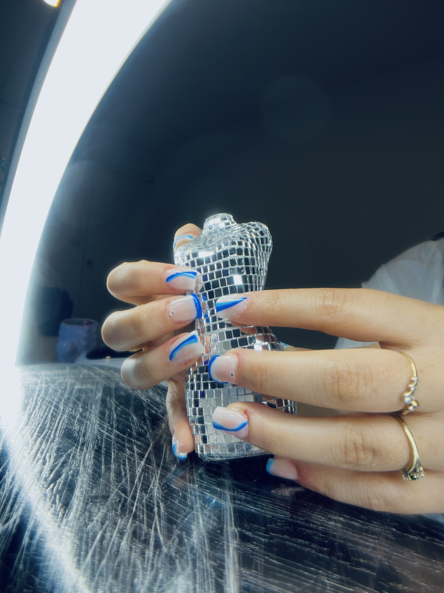
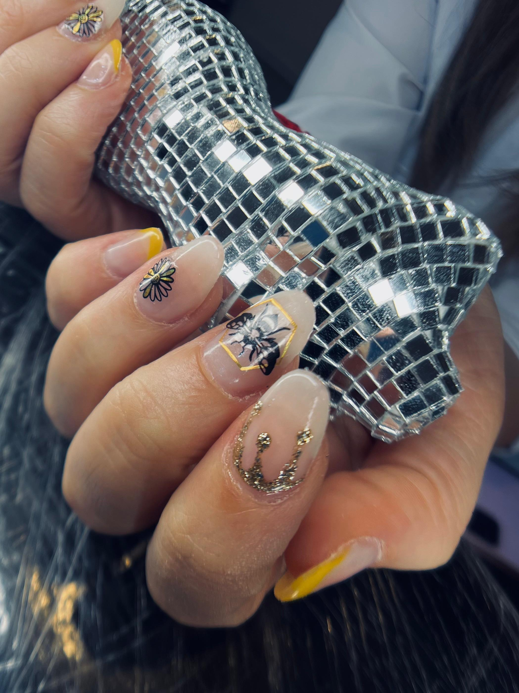

El esmaltado semipermanente es una técnica de manicura que consiste en aplicar un esmalte específico y secarlo con una lámpara LED o UV para lograr un acabado reluciente y duradero. Se recomienda realizarlo cada 2 o 3 semanas, dependiendo del crecimiento de la uña.

El esmaltado semipermanente es una técnica de manicura que consiste en aplicar un esmalte específico y secarlo con una lámpara LED o UV para lograr un acabado reluciente y duradero. Se recomienda realizarlo cada 2 o 3 semanas, dependiendo del crecimiento de la uña.
Las uñas esculpidas en Polygel son extensiones de uñas artificiales que se realizan con una mezcla de polvo acrílico y gel. Este material combina lo mejor de los sistemas de construcción de uñas acrílicos y de gel, resultando en uñas ligeras, fuertes y flexibles.

Las uñas soft gel son un sistema de extensiones de uñas que consiste en tips de gel suave que se adhieren a la uña natural. Se trata de una técnica de manicura que ofrece un acabado natural y duradero, y que se caracteriza por ser ligera y flexible.
Esmaltado Semipermanente
El esmaltado semipermanente es una técnica de manicura que consiste en aplicar un esmalte específico y secarlo con una lámpara LED o UV para lograr un acabado reluciente y duradero. Se recomienda realizarlo cada 2 o 3 semanas, dependiendo del crecimiento de la uña.
Kapping de Polygel
El esmaltado semipermanente es una técnica de manicura que consiste en aplicar un esmalte específico y secarlo con una lámpara LED o UV para lograr un acabado reluciente y duradero. Se recomienda realizarlo cada 2 o 3 semanas, dependiendo del crecimiento de la uña.
Esculpidas en Polygel
Las uñas esculpidas en Polygel son extensiones de uñas artificiales que se realizan con una mezcla de polvo acrílico y gel. Este material combina lo mejor de los sistemas de construcción de uñas acrílicos y de gel, resultando en uñas ligeras, fuertes y flexibles.
Soft Gel
Las uñas soft gel son un sistema de extensiones de uñas que consiste en tips de gel suave que se adhieren a la uña natural. Se trata de una técnica de manicura que ofrece un acabado natural y duradero, y que se caracteriza por ser ligera y flexible.